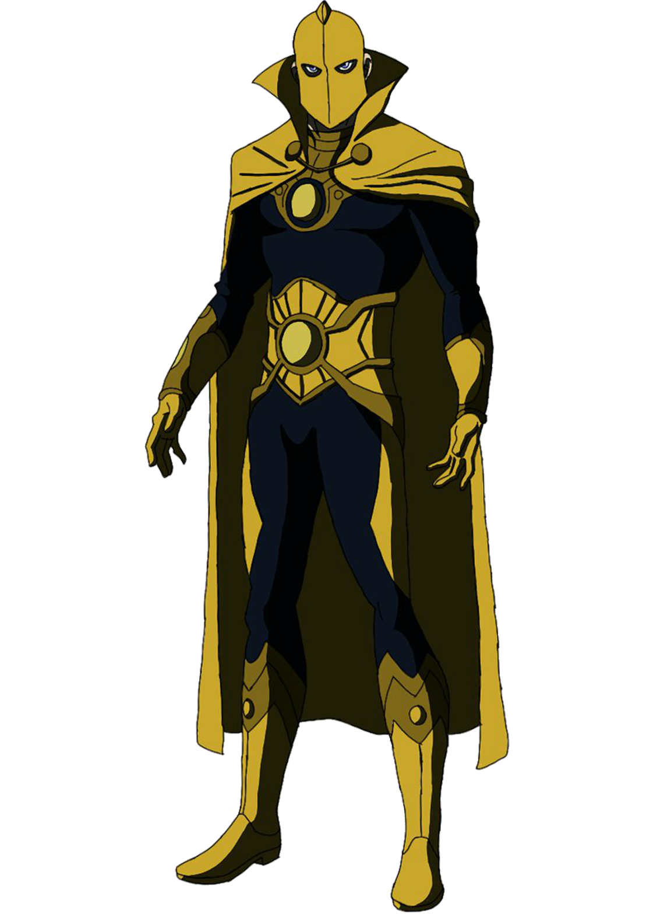

Informações do Senhor Destino
Voltar
Equipes DC

Criação do Senhor Destino
O Senhor Destino, também conhecido como Dr. Fate, é um personagem dos quadrinhos da DC Comics.
Ele foi criado por Gardner Fox e Howard Sherman, fazendo sua primeira aparição
em More Fun Comics #55, lançado em 1940.
O Personagem Senhor Destino
O Senhor Destino é um título compartilhado por vários personagens ao longo da história. O mais
conhecido é Kent Nelson, um arqueólogo que descobriu o misterioso capacete do Nabu, um
poderoso artefato mágico. Ao colocar o capacete, Kent Nelson se torna o hospedeiro
do espírito do antigo feiticeiro Nabu, assumindo o papel do Senhor Destino.
Como o Senhor Destino, Kent Nelson possui habilidades mágicas incríveis e uma conexão direta com os poderes do capacete. Ele é um dos maiores magos do universo DC e usa seus poderes para proteger o equilíbrio entre o bem e o mal, defendendo o plano terrestre contra forças sobrenaturais.
Quadrinhos Importantes do Senhor Destino
O Senhor Destino teve várias histórias importantes nos quadrinhos, explorando sua origem, seus desafios e suas batalhas contra ameaças mágicas. Aqui estão alguns dos quadrinhos mais relevantes do personagem:
"Doctor Fate" (1987-1989):
Escrito por J.M. DeMatteis e ilustrado por Keith Giffen, esta série modernizou a história do Senhor Destino, apresentando Eric e Linda Strauss como os novos hospedeiros do poderoso artefato.
"Day of Vengeance" (2005):
Nessa história escrita por Bill Willingham, o Senhor Destino desempenha um papel crucial na batalha contra a magia negra que ameaça o universo DC.
"Fate" (1994-1996):
Escrito por Christopher Golden e ilustrado por Tom Grindberg, esta série mostra Jared Stevens como o novo portador do capacete do Nabu e suas aventuras como o novo Senhor Destino.
Adaptações em Outras Mídias
O Senhor Destino apareceu em várias adaptações animadas e live-action, trazendo sua presença mágica para além dos quadrinhos. Aqui estão algumas das mais notáveis:
Série de TV "Smallville" (2001-2011):
O personagem Dr. Fate é interpretado por diversos atores em diferentes episódios da série "Smallville", trazendo sua magia para o universo televisivo.
Série animada "Liga da Justiça Sem Limites" (2004-2006):
O Senhor Destino aparece como um membro da Liga da Justiça, contribuindo com sua magia e sabedoria para enfrentar ameaças cósmicas.
Habilidades do Senhor Destino
O Senhor Destino possui uma ampla gama de poderes mágicos graças ao capacete do Nabu. Aqui estão algumas de suas principais habilidades:
Magia:
Ele tem acesso a um vasto conhecimento de magia e é capaz de lançar feitiços poderosos e manipular a realidade.
Voo:
O Senhor Destino pode voar usando suas habilidades mágicas, permitindo-lhe se mover pelo ar a altas velocidades.
Proteção e invulnerabilidade:
O capacete do Nabu oferece proteção mágica ao Senhor Destino, tornando-o invulnerável a ataques físicos e mágicos.
Clarividência e precognição:
Ele possui a capacidade de ver o futuro e ter visões claras do que está por vir.
Conclusão
O Senhor Destino é um personagem cativante da DC Comics, cuja identidade é compartilhada por vários indivíduos ao longo do tempo. Kent Nelson, como o mais conhecido hospedeiro do Senhor Destino, protege o plano terrestre com sua magia poderosa e conhecimento ancestral. Sua conexão com o capacete do Nabu lhe confere uma variedade de habilidades mágicas, desde lançar feitiços e voar até ver o futuro. Ao longo dos anos, suas histórias nos quadrinhos exploraram o mundo da magia e a luta contra ameaças sobrenaturais. Com aparições em várias adaptações, o Senhor Destino continua a encantar os fãs tanto nos quadrinhos quanto em outras mídias, deixando uma marca duradoura no universo DC.